08 | Operatore CdP
Accreditamento utente interno di Capitanerie
Una panoramica dei flussi relativi all'accreditamento, per orientarti passo dopo passo.
- Profilo: Responsabile Centrale/Locale
01.
Accreditamento CP Locale
Una panoramica sul flusso di accreditamento da parte di un Responsabile Locale.
Profilo: Responsabile Locale
Accreditamento CP Locale
Passaggi per accreditarsi a sistema
Per accreditarsi a sistema, il Responsabile Locale dovrà procedere seguendo i passaggi sottostanti.
Step 1
I tuoi dati
Consente di inserire i dati: anagrafici, di residenza e di contatto.
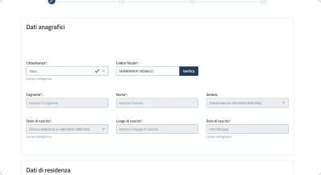
Step 2
Dettaglio utente
Consente di aggiungere un nuovo profilo, indicando la tipologia: di account, utente e profilo.
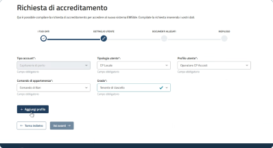

Step 4
Riepilogo
Consente di visualizzare il riepilogo delle informazioni inserite negli step precedenti e procedere con la sottomissione dell'accreditamento.
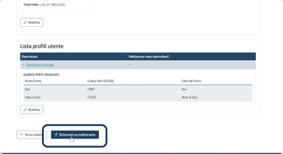
Passaggi per creare nuova utenza (interno)
I tuoi dati
-
I tuoi dati (in corso)
-
Dettaglio utente (da completare)
-
Documenti allegati (da completare)
-
Riepilogo (da completare)
Dati anagrafici "Extra UE"
Per l'utente "Extra UE" il sistema chiederà di inserire i seguenti dati: Cittadinanza, Identificativo fiscale, se in possesso il numero EORI, Cognome, Nome, Genere, Stato, Luogo e data di nascita.

Dati anagrafici "Italiano o comunitario"
Per l'utente "Italiano o comunitario" il sistema chiederà di inserire la cittadinanza e l'identificativo fiscale/codice fiscale. In caso di cittadinanza italiana, con l'inserimento del codice fiscale, verificarlo cliccando il pulsante "Verifica".

Inserimento dati anagrafici
Dopo la verifica compilare i campi indicando: Cognome, Nome, Genere, Stato di nascita, Luogo di nascita e Data di nascita.

Inserimento dati di residenza e di contatto
Indicare se la residenza è estera o meno (Sì/No), l'indirizzo, numero civico, provincia, comune e CAP/ZIP Code. Successivamente inserire il contatto e-mail e telefonico. Cliccare "Vai avanti" per proseguire.
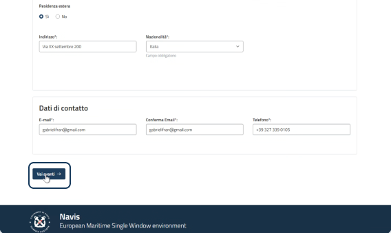
Documento di riconoscimento per utente Extra UE
Se l'utente è Extra UE, è necessario inserire il documento di riconoscimento, selezionando la tipologia del documento e successivamente indicando i dati: Numero documento, Rilasciato da, Data rilascio, Data di scadenza. Cliccare "Vai avanti" per procedere.
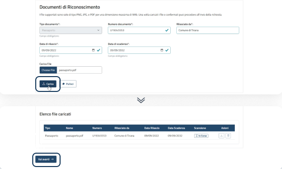
Requisiti per l'utente con cittadinanza Extra UE
Nel caso in cui l'utente selezioni la cittadinanza per Paesi Extra UE, il sistema richiede di dichiarare di essere in possesso di uno dei requisiti di seguito elencati:
- permesso di soggiorno UE per soggiornante di lungo periodo;
- permesso di soggiorno per asilo politico;
- permesso di soggiorno per protezione sussidiaria;
- carta di soggiorno UE come familiare extracomunitario di cittadino comunitario.
Passaggi per creare nuova utenza (interno)
Dettaglio utente
-
I tuoi dati (completato)
-
Dettaglio utente (in corso)
-
Documenti allegati (da completare)
-
Riepilogo (da completare)
Selezione tipologia utente
Selezionare come tipologia utente "CP Locale", successivamente selezionare il Profilo utente, il comando di appartenenza e il grado.
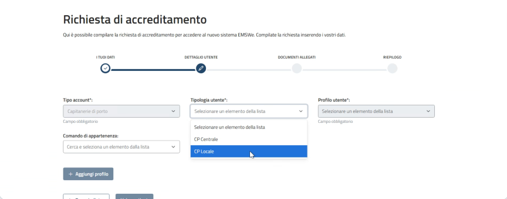
Aggiungi profilo
Per aggiungere il profilo cliccare il pulsante "+ Aggiungi profilo".
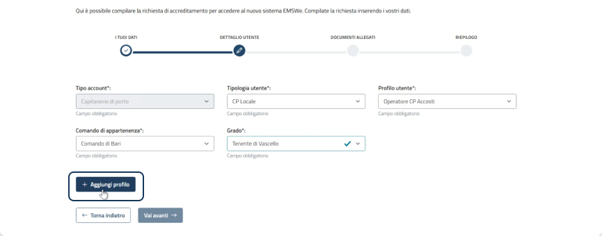
Associazione porto
Dopo che il profilo viene aggiunto in elenco, proseguire cliccando l'apposito pulsante "Associa porto" per singolo account presente in tabella.
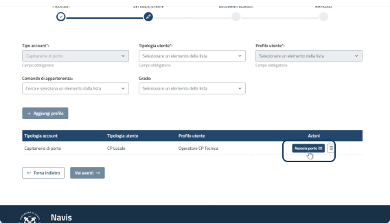
Selezione e aggiunta porto
Il sistema mostra una finestra dove poter selezionare uno o più porti. Dopo la selezione, per aggiungerli cliccare il pulsante "Aggiungi".
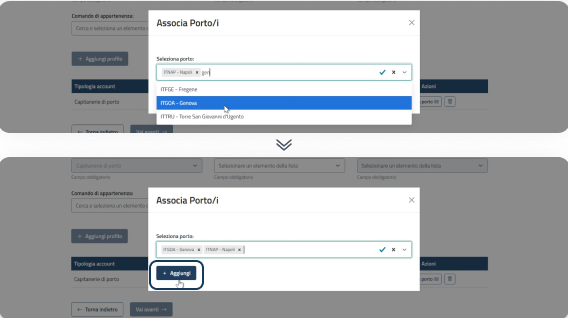
Porto associato al profilo e possibili azioni
L'account e i relativi porti associati sono visualizzati in elenco. Per ogni account è possibile modificare l'associazione dei porti tramite l'apposito pulsante o eliminarla tramite il pulsante con l'icona del cestino. Per ogni porto associato è possibile eliminarlo tramite il pulsante con l'icona del cestino.
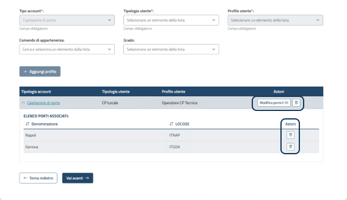
È possibile aggiungere ulteriori profili replicando le operazioni sopra descritte.
Passaggi per creare nuova utenza (interno)
Documenti allegati
-
I tuoi dati (completato)
-
Dettaglio utente (completato)
-
Documenti allegati (in corso)
-
Riepilogo (da completare)
Allegare documenti successivamente
È possibile aggiungere i documenti durante il processo di accreditamento oppure in un secondo momento, selezionando il pulsante "Salta e prosegui".
Focus sugli stati della scansione — Funzionalità comuni e modalità operative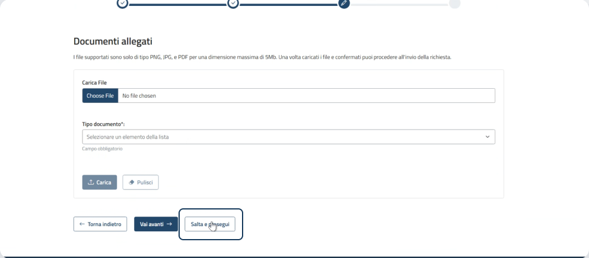
Passaggi per creare nuova utenza (interno)
Riepilogo
-
I tuoi dati (completato)
-
Dettaglio utente (completato)
-
Documenti allegati (completato)
-
Riepilogo (in corso)
Informazioni e possibili azioni
Nell'ultimo passaggio di riepilogo è possibile consultare tutte le informazioni inserite e sottomettere tramite l'apposito pulsante l'accreditamento.
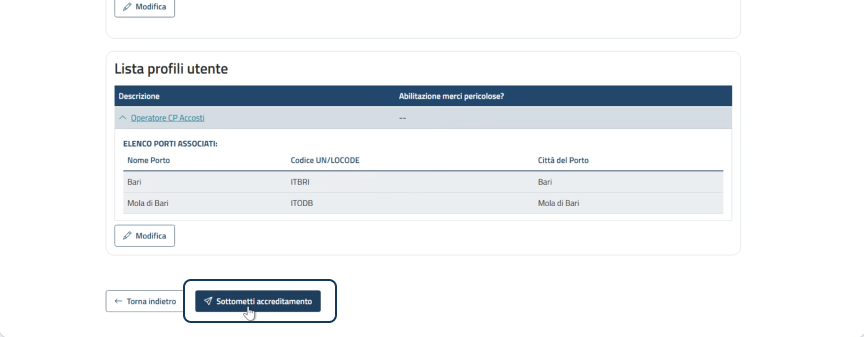
Utenza creata
Il sistema informa l'utente che l'utenza è stata creata con successo, in quanto la richiesta essendo stata inserita da parte del Responsabile Centrale, non richiede un iter approvativo. Pertanto lo stato della richiesta assumerà lo stato approvata.
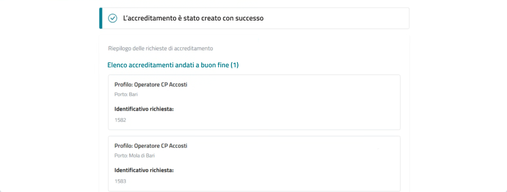
02.
Accreditamento CP Centrale
Una panoramica sul flusso di accreditamento da parte di un Responsabile Centrale.
Profilo: Responsabile Centrale
Accreditamento CP Centrale
Passaggi per accreditarsi a sistema
Per accreditarsi a sistema, il Responsabile Centrale dovrà procedere seguendo i passaggi sottostanti.

Step 2
Dettaglio utente
Consente di aggiungere un nuovo profilo, indicando la tipologia: di account, utente e profilo.
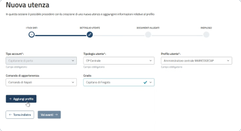
Step 3
Documenti allegati (opzionale)
Consente di allegare varie tipologie di documenti.
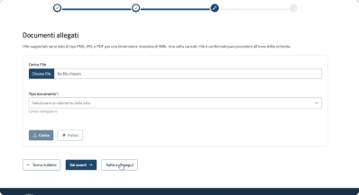
Step 4
Riepilogo
Consente di visualizzare il riepilogo delle informazioni inserite negli step precedenti e procedere con la sottomissione dell'accreditamento.
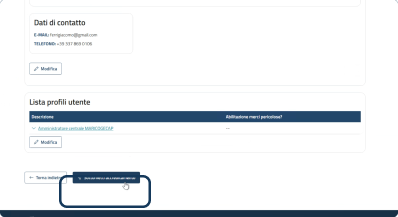
Passaggi per creare nuova utenza (interno)
I tuoi dati
-
I tuoi dati (in corso)
-
Dettaglio utente (da completare)
-
Documenti allegati (da completare)
-
Riepilogo (da completare)
Dati anagrafici "Extra UE"
Per l'utente "Extra UE" il sistema chiederà di inserire i seguenti dati: Cittadinanza, Identificativo fiscale, se in possesso il numero EORI, Cognome, Nome, Genere, Stato, Luogo e data di nascita.
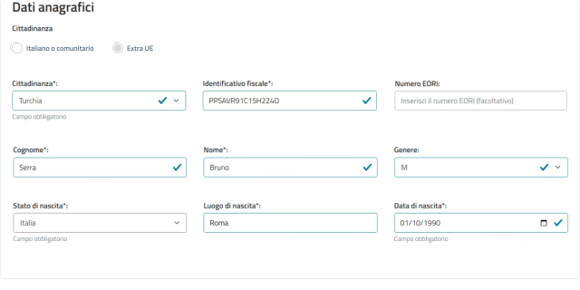
Dati anagrafici "Italiano o comunitario"
Per l'utente "Italiano o comunitario" il sistema chiederà di inserire la cittadinanza e l'identificativo fiscale/codice fiscale. In caso di cittadinanza italiana, con l'inserimento del codice fiscale, verificarlo cliccando il pulsante "Verifica".
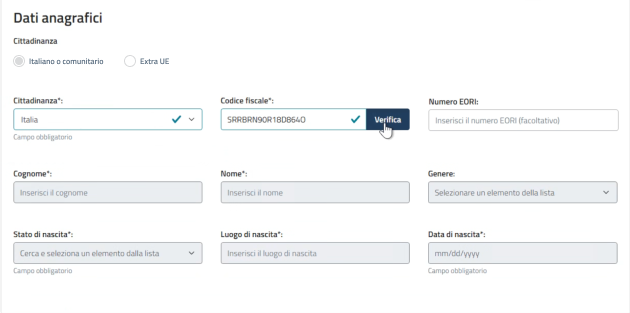
Inserimento dati anagrafici
Dopo la verifica compilare i campi indicando: Cognome, Nome, Genere, Stato di nascita, Luogo di nascita e Data di nascita.
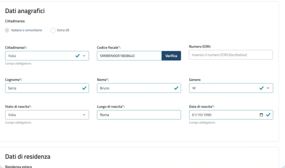
Inserimento dati di residenza e di contatto
Indicare se la residenza è estera o meno (Sì/No), l'indirizzo, numero civico, provincia, comune e CAP/ZIP Code. Successivamente inserire il contatto e-mail e telefonico. Cliccare "Vai avanti" per proseguire.

Documento di riconoscimento per utente Extra UE
Se l'utente è Extra UE, è necessario inserire il documento di riconoscimento, selezionando la tipologia del documento e successivamente indicando i dati: Numero documento, Rilasciato da, Data rilascio, Data di scadenza. Cliccare "Vai avanti" per procedere.
Requisiti per l'utente con cittadinanza Extra UE
Nel caso in cui l'utente selezioni la cittadinanza per Paesi Extra UE, il sistema richiede di dichiarare di essere in possesso di uno dei requisiti di seguito elencati:
- permesso di soggiorno UE per soggiornante di lungo periodo;
- permesso di soggiorno per asilo politico;
- permesso di soggiorno per protezione sussidiaria;
- carta di soggiorno UE come familiare extracomunitario di cittadino comunitario.
Passaggi per creare nuova utenza (interno)
Dettaglio utente
-
I tuoi dati (completato)
-
Dettaglio utente (in corso)
-
Documenti allegati (da completare)
-
Riepilogo (da completare)
Selezione tipologia utente
Selezionare come tipologia utente "CP Centrale", successivamente selezionare il Profilo utente, il comando di appartenenza e il grado.
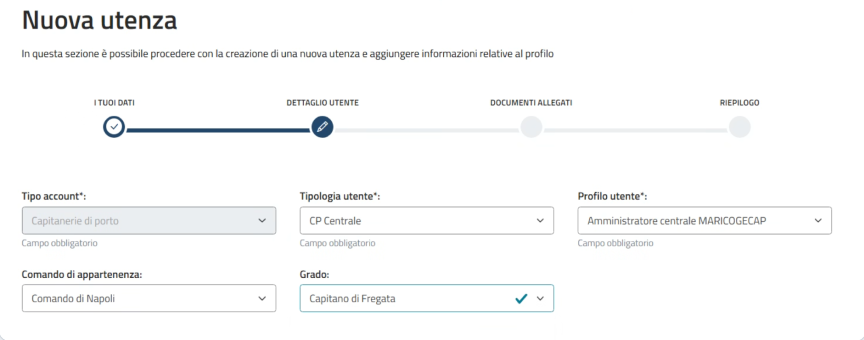
Aggiungi profilo
Per aggiungere il profilo cliccare il pulsante "+ Aggiungi profilo".
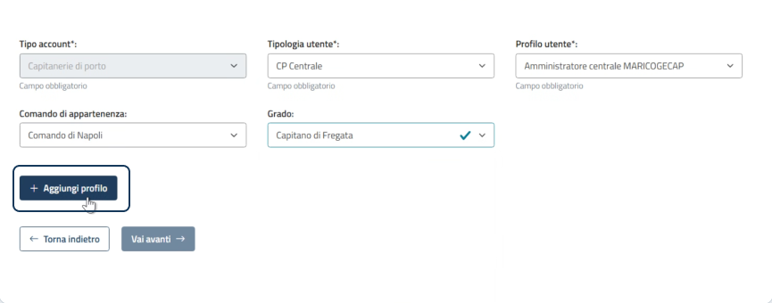
Profilo aggiunto e azioni disponibili
È possibile sia eliminare il profilo aggiunto tramite il pulsante con l'icona del cestino, sia aggiungere un ulteriore profilo secondo le modalità descritte precedentemente. Per proseguire cliccare il pulsante "Vai avanti".
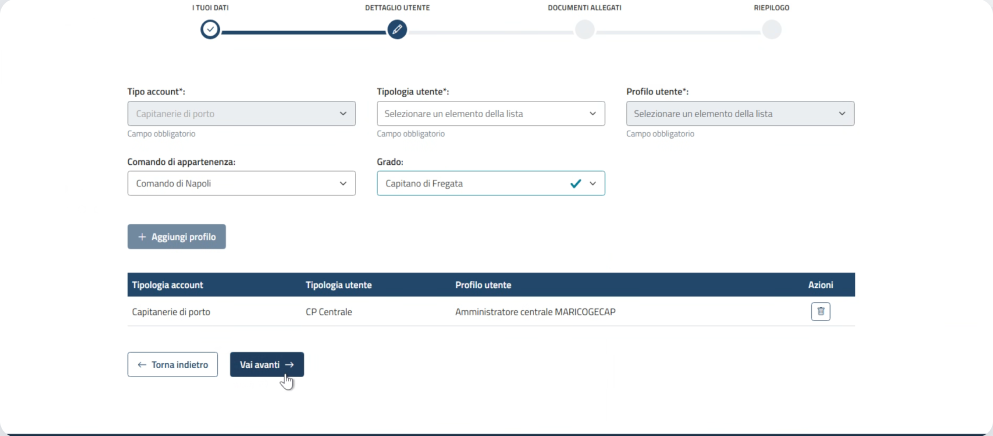
È possibile aggiungere ulteriori profili replicando le operazioni sopra descritte.
Passaggi per creare nuova utenza (interno)
Documenti allegati
-
I tuoi dati (completato)
-
Dettaglio utente (completato)
-
Documenti allegati (in corso)
-
Riepilogo (da completare)
Allegare documenti successivamente
È possibile aggiungere i documenti durante il processo di accreditamento oppure in un secondo momento, selezionando il pulsante "Salta e prosegui".
Focus sugli stati della scansione — Funzionalità comuni e modalità operative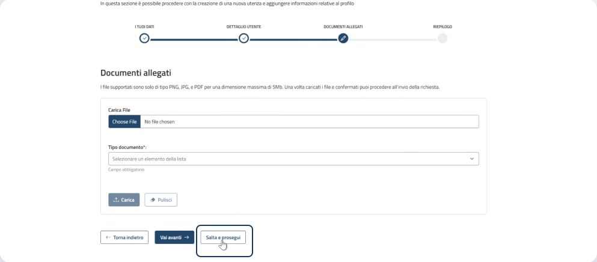
Passaggi per creare nuova utenza (interno)
Riepilogo
-
I tuoi dati (completato)
-
Dettaglio utente (completato)
-
Documenti allegati (completato)
-
Riepilogo (in corso)
Informazioni e possibili azioni
Nell'ultimo passaggio di riepilogo è possibile consultare tutte le informazioni inserite e sottomettere tramite l'apposito pulsante l'accreditamento.
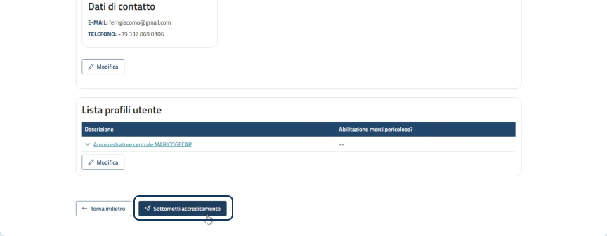
Utenza creata
Il sistema informa l'utente che l'utenza è stata creata con successo, in quanto la richiesta essendo stata inserita da parte del Responsabile Centrale, non richiede un iter approvativo. Pertanto lo stato della richiesta assumerà lo stato approvata.
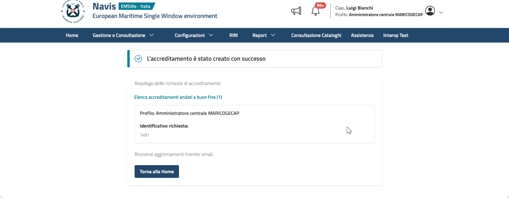
03.
Ricerca richieste di accreditamento
Una panoramica sul flusso di ricerca di una richiesta di accreditamento.
Profilo: Responsabile Centrale/Locale
Punto di accesso
La voce di menù
Dalla dashboard è possibile accedere alle principali sezioni tramite le voci di menu.
Menu a tendina
Cliccando sulla voce "Gestione e Consultazione" viene visualizzato un menu a tendina, da cui è possibile accedere alla "Gestione richieste accreditamento".
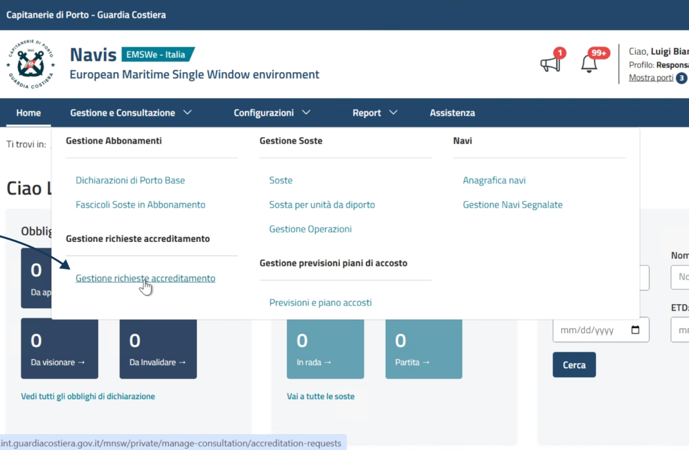
Ricerca e consultazione
Funzionalità in pagina
È possibile avviare la ricerca utilizzando i filtri disponibili:
- filtri base;
- filtri avanzati.
La schermata è suddivisa nelle seguenti tre sezioni:
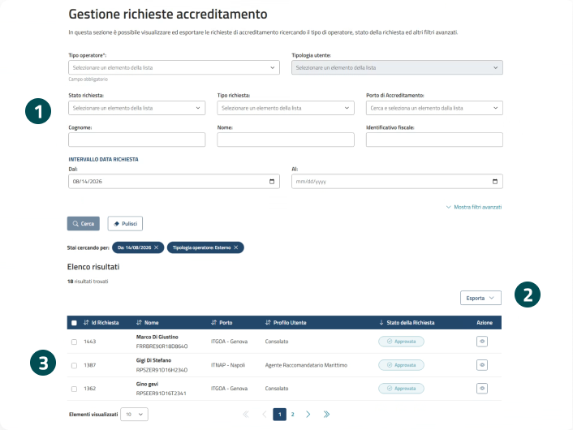
Filtri di ricerca
La sezione Filtri consente di ricercare le utenze secondo diversi criteri. Sono disponibili filtri base, come Tipo operatore (obbligatorio), Tipologia utente (in relazione al tipo operatore selezionato), Stato richiesta, Tipo richiesta, Porto di accreditamento, Cognome, Nome e Identificativo fiscale, e filtri avanzati per affinare la ricerca per intervallo data richiesta. I filtri applicati sono visualizzati e cancellabili.
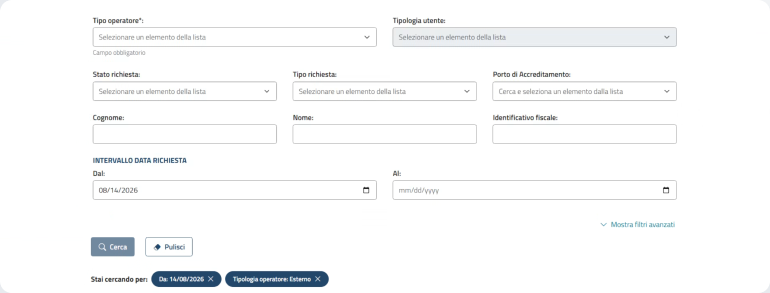
Azioni sulla tabella
È possibile esportare l'elenco delle richieste di accreditamento risultanti dalla ricerca, cliccando il pulsante "Esporta".
Visualizzazione utenze tramite tabella
I risultati della ricerca vengono presentati in una tabella, mostrando le informazioni principali e le azioni disponibili per singola utenza: visualizzazione.
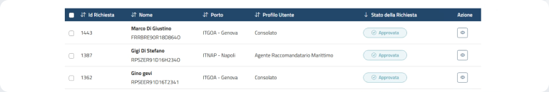
Il Responsabile Locale può ricercare solo le utenze relative ai porti per i quali risulta responsabile.
Ricerca e consultazione
Dettaglio richiesta di accreditamento
All'interno della pagina sono consultabili le seguenti informazioni:
- Dati utente:
- Dati anagrafici;
- Dati di accesso;
- Documento di riconoscimento;
- Dati profilo:
- Lista collaboratori;
- Note interne;
- Documenti allegati.
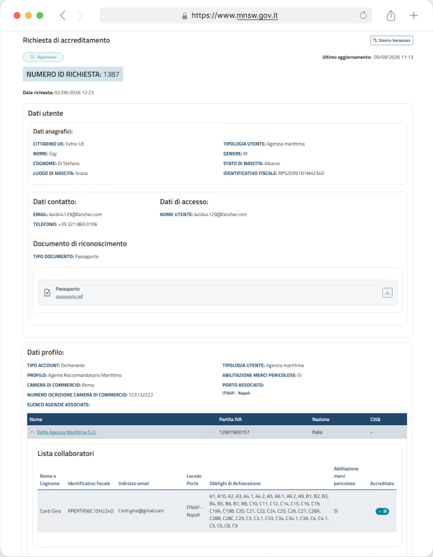
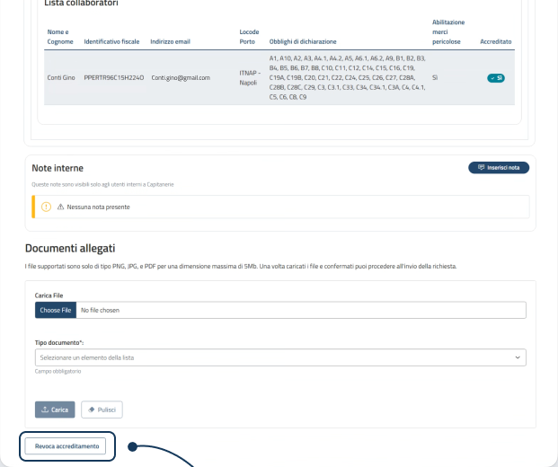
Possibili azioni sulla richiesta di accreditamento
Revoca accreditamento: maggiori dettagli nella sezione dedicata.
04.
Valutazione richiesta di accreditamento
Una panoramica sulla valutazione di una richiesta di accreditamento.
Valutazione richiesta di accreditamento
Punti di accesso per valutare le richieste di accreditamento
Profilo: Responsabile Locale
Dashboard
È possibile accedere alle richieste di accreditamento tramite le azioni disponibili per ciascuna attività presente nel tab "Accreditamento".
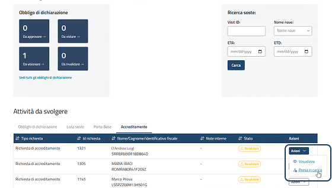
Notifiche
Attraverso la sezione delle notifiche è possibile accedere al dettaglio della richiesta di accreditamento per la valutazione della stessa.
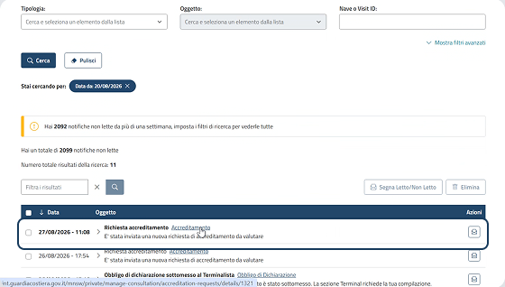
Gestione richieste accreditamento
All'interno della voce "Gestione richieste di accreditamento" sarà possibile visualizzare e accedere alle richieste di accreditamento.
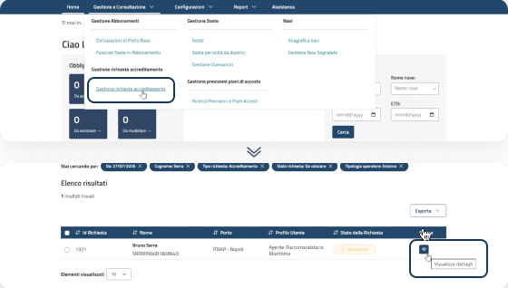
Valutazione richiesta di accreditamento
Presa in carico di una richiesta di accreditamento
Il Responsabile Locale ha la possibilità di prendere in carico la richiesta di accreditamento, per valutarla, da due punti differenti:
Presa in carico dalla dashboard
È possibile prendere in carico le richieste di accreditamento tramite le azioni disponibili per ciascuna attività presente nel tab "Accreditamento", cliccando "Presa in carico".
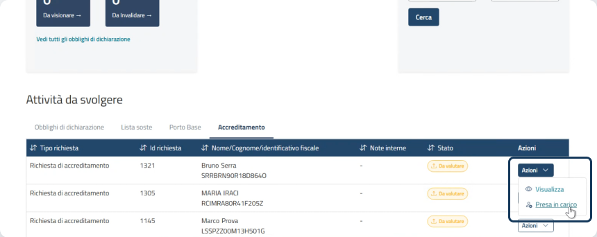
Presa in carico dal dettaglio della richiesta
È possibile prendere in carico le richieste di accreditamento tramite il pulsante "Prendi in carico" all'interno del dettaglio della richiesta di accreditamento.
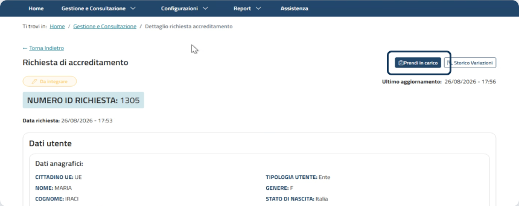
Valutazione richiesta di accreditamento
Azioni disponibili post "Presa in carico"
Una volta che il Responsabile Locale ha preso in carico una richiesta di accreditamento, avrà la possibilità di procedere con le seguenti azioni:
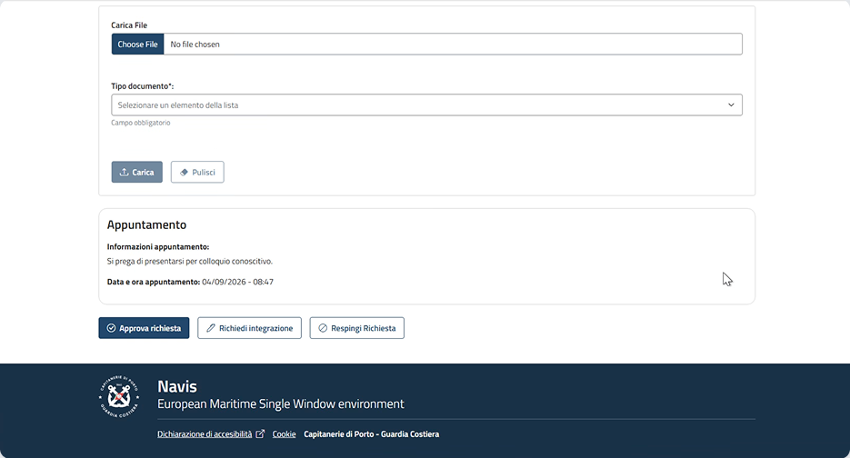
Per approvare una richiesta di accreditamento da parte di un utente Extra UE, l'autorità marittima dovrà fissare prima un appuntamento con l'utente richiedente.
L'utente, dopo aver preso visione della richiesta di accreditamento e in caso di richiesta da parte di utente Extra UE, aver fissato un appuntamento, può decidere se approvarla.
L'utente, dopo aver preso visione della richiesta di accreditamento, può decidere se richiederne l'integrazione.
L'utente, dopo aver preso visione della richiesta di accreditamento, può decidere di respingerla.
Valutazione richiesta di accreditamento
Passaggi per fissare un appuntamento
Il Responsabile Locale può fissare un appuntamento con l'utente richiedente, tramite i seguenti passaggi.
Stato risultante: Appuntamento fissato
Fissa appuntamento
Per fissare un appuntamento, cliccare il pulsante "Fissa appuntamento".
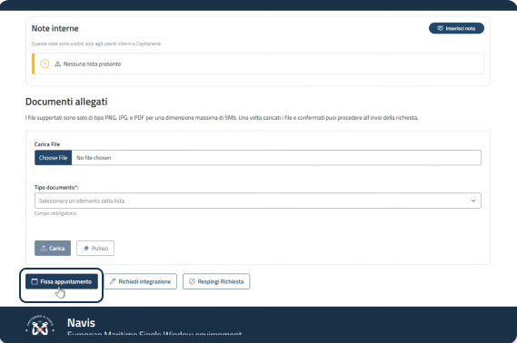
Inserimento informazioni appuntamento
Il sistema mostra una finestra dove inserire informazioni sull'appuntamento: data, ora, nome, cognome, e-mail e telefono del referente Capitaneria. Infine cliccare "Conferma appuntamento".
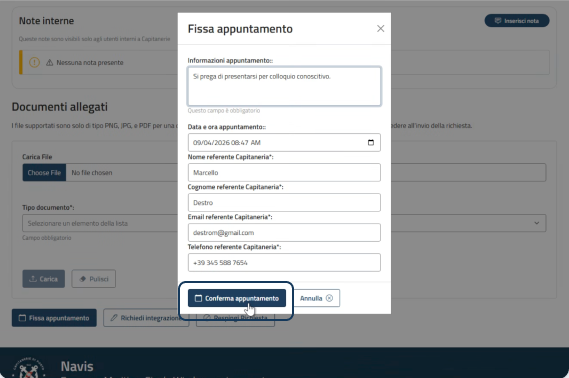
Appuntamento fissato
Dopo aver fissato l'appuntamento, la richiesta di accreditamento assumerà lo stato "Appuntamento fissato".
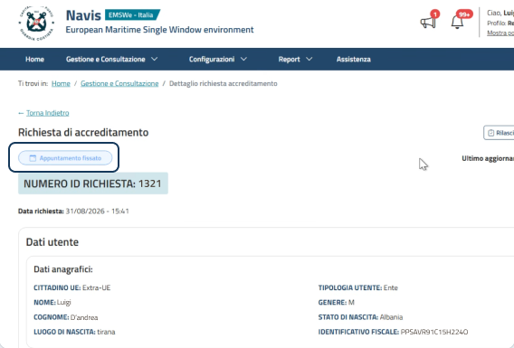
Valutazione richiesta di accreditamento
Passaggi per approvazione accreditamento
Il Responsabile Locale può approvare una richiesta di accreditamento, tramite i seguenti passaggi.
Stato risultante: Approvata
Approvazione richiesta accreditamento
Il Responsabile Locale potrà approvare la richiesta di accreditamento tramite il pulsante "Approva richiesta".
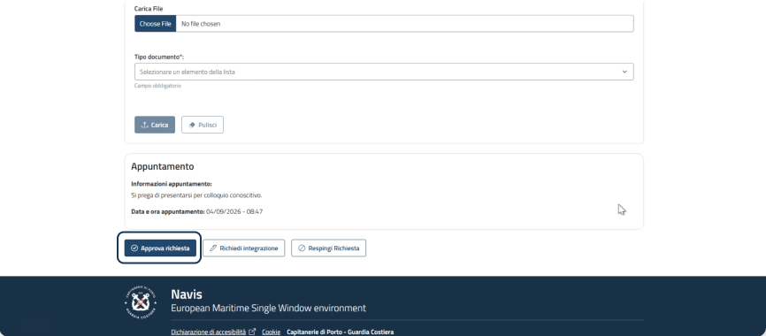
Finestra di conferma e successo
Il sistema mostra una finestra di conferma dell'approvazione, cliccare il pulsante "Approva" per proseguire. Successivamente verrà mostrata una finestra di successo della richiesta. La richiesta di accreditamento assumerà lo stato "Approvata".
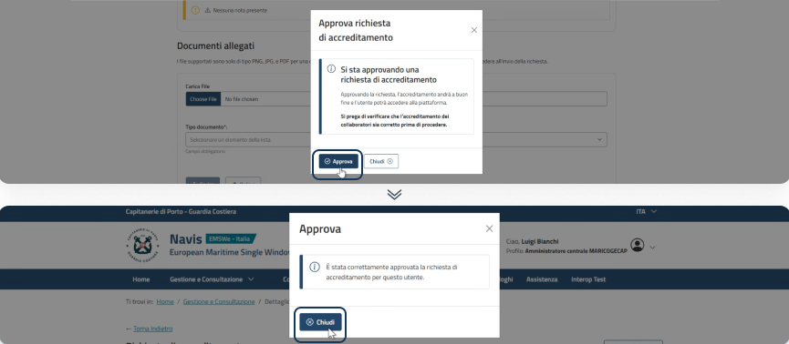
Se la richiesta è da parte di un utente Extra UE, sarà possibile approvare la richiesta solo dopo aver fissato un appuntamento con l'utente richiedente.
Valutazione richiesta di accreditamento
Approvazione richiesta Agente raccomandatario e collaboratori
Per i collaboratori è disponibile il toggle "Sì/Accredita tutti".
Approvazione accreditamento collaboratori
Nell'ambito della procedura di approvazione di un'accreditamento di un Agente Raccomandatario Marittimo associato a più collaboratori, il Responsabile Locale può gestire contestualmente, attraverso gli appositi pulsanti (toggle), l'approvazione delle richieste di accreditamento dei collaboratori dell'agente.
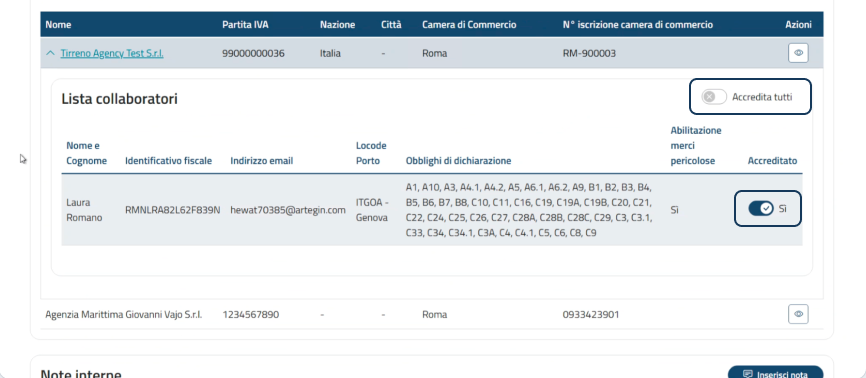
Finestra informativa verifica collaboratori
Cliccando sul pulsante "Approva richiesta", il sistema mostra una finestra di riepilogo contenente l'elenco dei collaboratori per i quali si sta procedendo alla validazione dell'accreditamento. La finestra invita l'utente a verificare attentamente che i collaboratori selezionati siano corretti prima di confermare l'operazione. Cliccare "Approva".
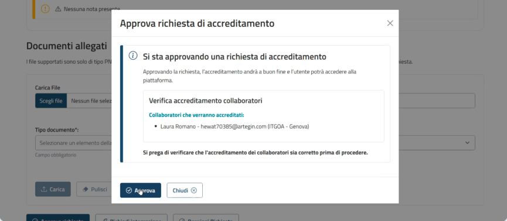
Valutazione richiesta di accreditamento
Passaggi per rifiutare accreditamento
Il Responsabile Locale può rifiutare una richiesta di accreditamento, tramite i seguenti passaggi.
Stato risultante: Respinta
Respingi richiesta
Il Responsabile Locale può decidere di respingere la richiesta di accreditamento cliccando il pulsante "Respingi richiesta".
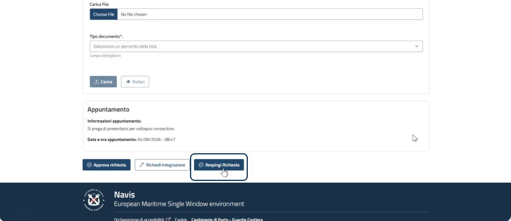
Finestra di motivazione
Il sistema mostra una finestra in cui inserire obbligatoriamente la motivazione. Proseguire cliccando "Respingi richiesta". La richiesta di accreditamento assumerà lo stato "Respinta".
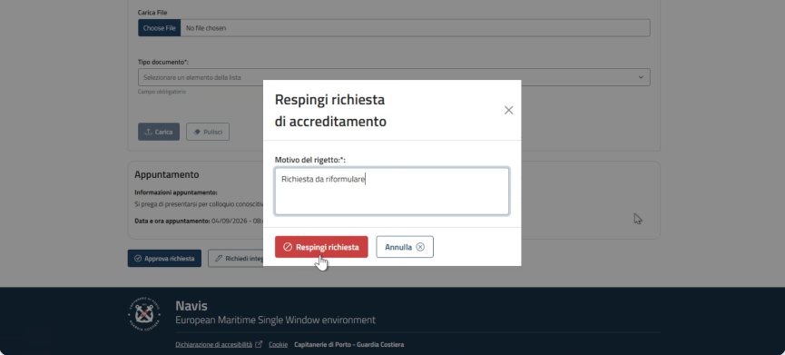
Valutazione richiesta di accreditamento
Passaggi per richiedere l'integrazione
Il Responsabile Locale può richiedere l'integrazione di una richiesta di accreditamento, tramite i seguenti passaggi.
Stato risultante: Da integrare
Richiedi integrazione
Per richiedere l'integrazione della richiesta di accreditamento, in fondo alla pagina di dettaglio cliccare il pulsante "Richiedi integrazione".
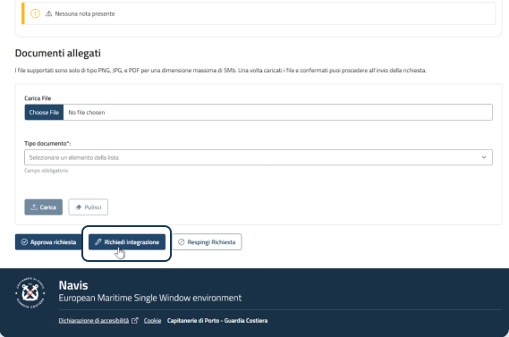
Inserimento motivazione
Il sistema mostra una finestra in cui inserire obbligatoriamente la motivazione; in seguito chiudere la finestra che conferma l'invio della richiesta.
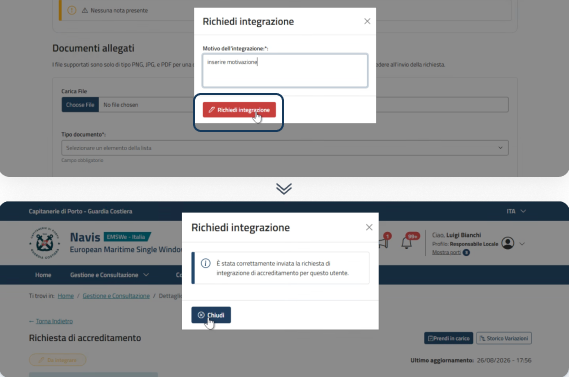
Dettaglio e cambio stato
Dopo aver inviato la richiesta di integrazione, all'interno del dettaglio, la richiesta di accreditamento assume lo stato "Da integrare".
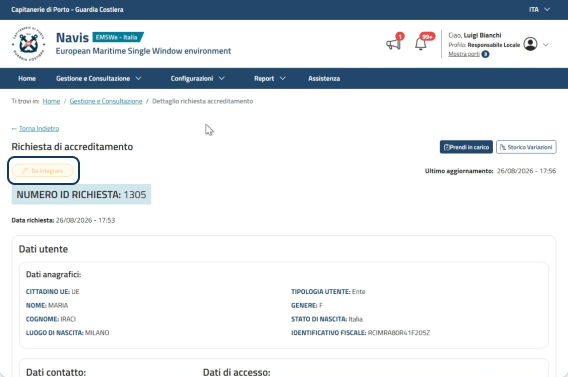
05.
Revoca accreditamento
Una panoramica sul flusso di revoca di una richiesta di accreditamento.
Revoca accreditamento
Passaggi per revocare accreditamento
Il Responsabile Centrale/Locale può revocare l'accreditamento, tramite i seguenti passaggi.
Stato risultante: Revocata
Profilo: Responsabile Centrale/Locale
Revoca accreditamento
All'interno del dettaglio della richiesta di accreditamento, l'Autorità marittima può decidere di revocare una richiesta di accreditamento precedentemente approvata, cliccando il pulsante "Revoca accreditamento".

Finestra di motivazione
Il sistema mostra una finestra in cui inserire obbligatoriamente la motivazione. Proseguire cliccando "Revoca accreditamento". La richiesta assumerà lo stato "Revocata".